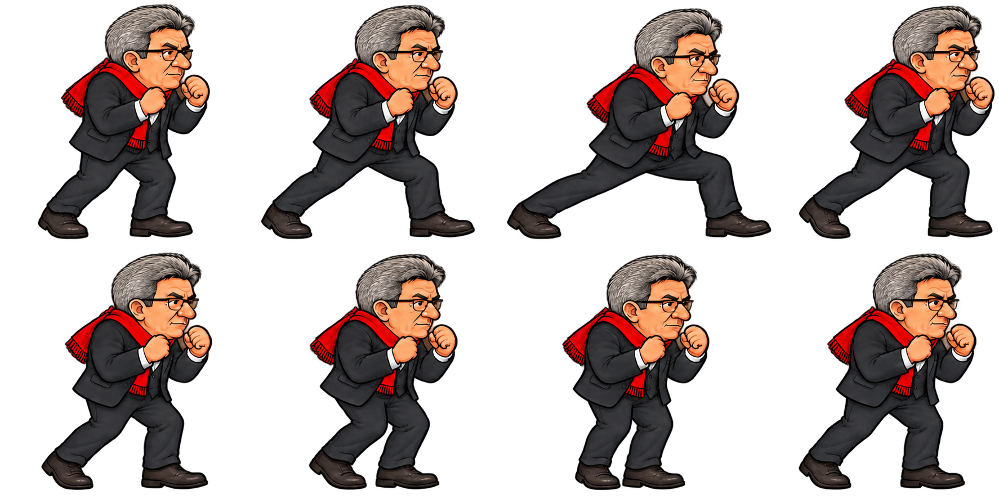

Mélenchon · Marine Le Pen · Édouard Philippe
La démonstration alterne déplacement, arrêt et changement de direction. Les pieds suivent la distance parcourue. Pour essayer toi-même, maintiens une flèche du clavier ou un bouton de déplacement.
Appuis resserrés, avancée du pied avant, transfert du poids et retour du pied arrière.
